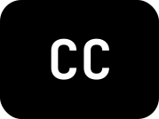

Audio and Video Recordings Overview
Like images, audio and video recordings can be difficult for assistive technologies to understand. That's why it's important to apply the following guidelines to your website's design.
TranscriptsLevel A
A graphic representing the conversion of a video recording into a transcript.
For audio-only recordings, provide a transcript of the relevant content.
For video-only recordings, provide a transcript or audio description of the relevant content, unless the video is purely decorative.
For videos with sound, provide a transcript or audio description if there is relevant visual content not included in the audio.
CaptionsLevel A

An image of the closed captioning icon.
Synchronized captions should be provided for non-live and live videos.
Synchronized captions should be provided for non-live and live audio.
ControlLevel A
An image of the closed captioning icon.
Audio recordings that play automatically and last longer than 3 seconds must have a mechanism to pause, stop, mute, and change the volume.